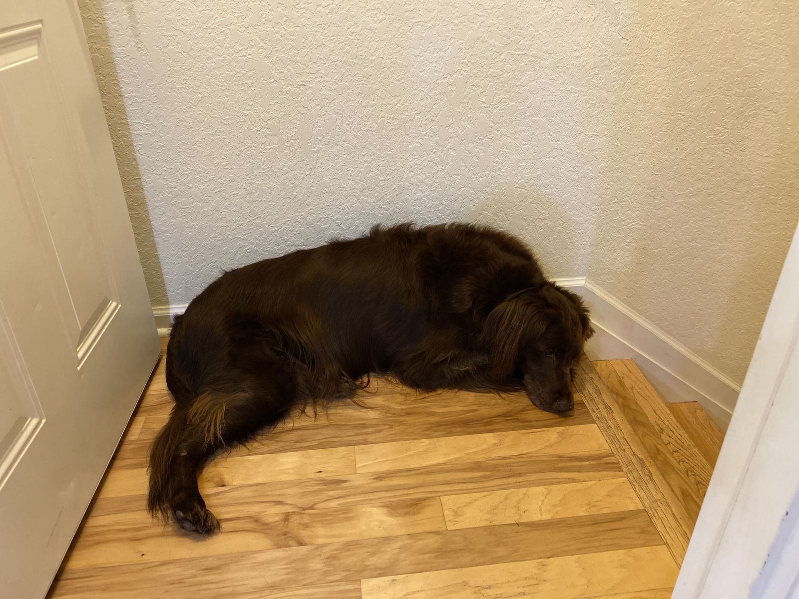

Lazy Dogs
Wednesday marked two years from the publication date of one of my favorite articles of all time: Productivity is Dangerous. I read it every December and I recommend you read it too. Now you might be wondering why a borderline-workaholic, always-on program-project-technical-manager-engineer loves an article praising doing nothing and describing LinkedIn as a death cult. I think, at the very least, the article is an excellent call to slow down and evaluate what is important and what is not.
Last week I saw a TV show set on the Mekong river in Cambodia with plenty of b-roll of families living along the river banks. They appeared to do occasional odd jobs, get food and water from the river, and spend remaining time with each other doing leisurely activities. I understand that this may be a massive simplification.

The past two days I have been working remotely from Florida, furiously typing into my laptop, while two dogs spent the entire day sleeping on the floor, occasionally getting up to bark outside the window. Before the industrial revolution, before society at large, I suspect this is generally how most humans behaves. Lounging around, searching food food, helping each other out. Probably I'm wrong here, but it's an interesting thought.
I hope everyone has a lazy holiday.